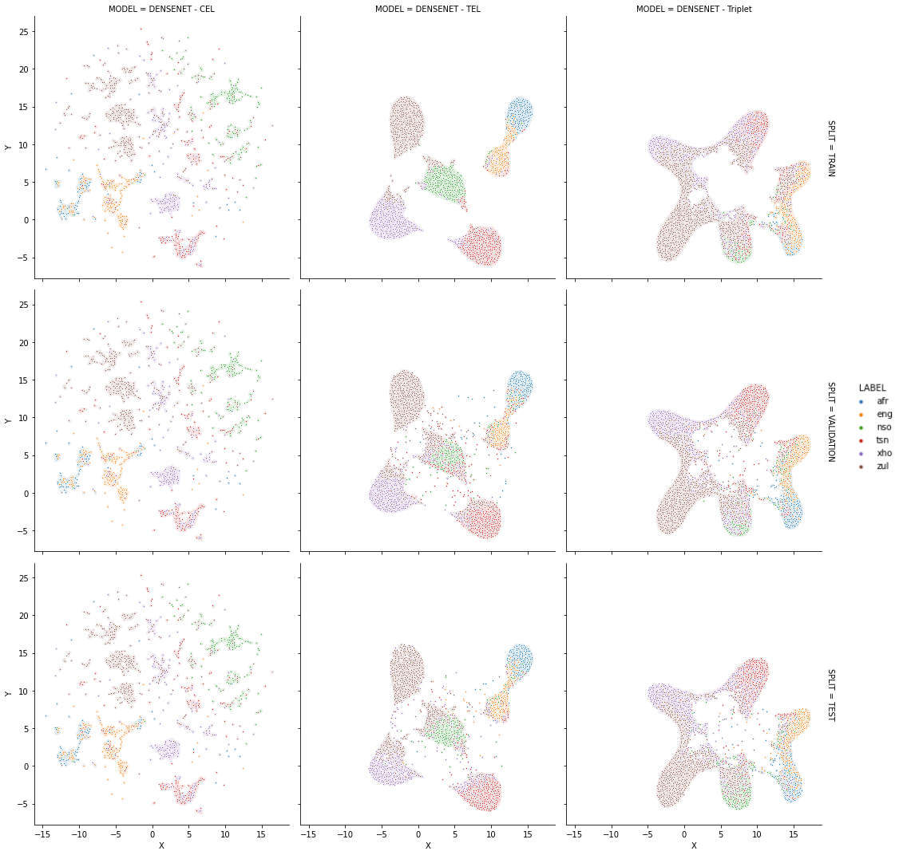

I am currently a Machine Learning Engineer at Alphawave in Stellenbosch, South Africa. I am also a part-time researcher with my area of focus being multimodal system understanding and generation. Also, I love cats and cycling. For an overview of my brief publication history please scroll down. You can find my Google Scholar profile here
University of Cape Town
Triplet Entropy Loss: Improving The Generalisation of Short Speech Language Identification Systems
Stellenbosch University
Alphawave
Vodacom

Triplet Entropy Loss
© Copyrights Kelvin. All Rights Reserved